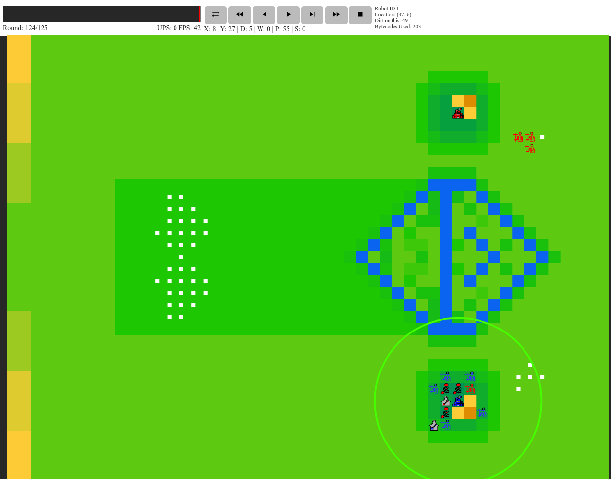
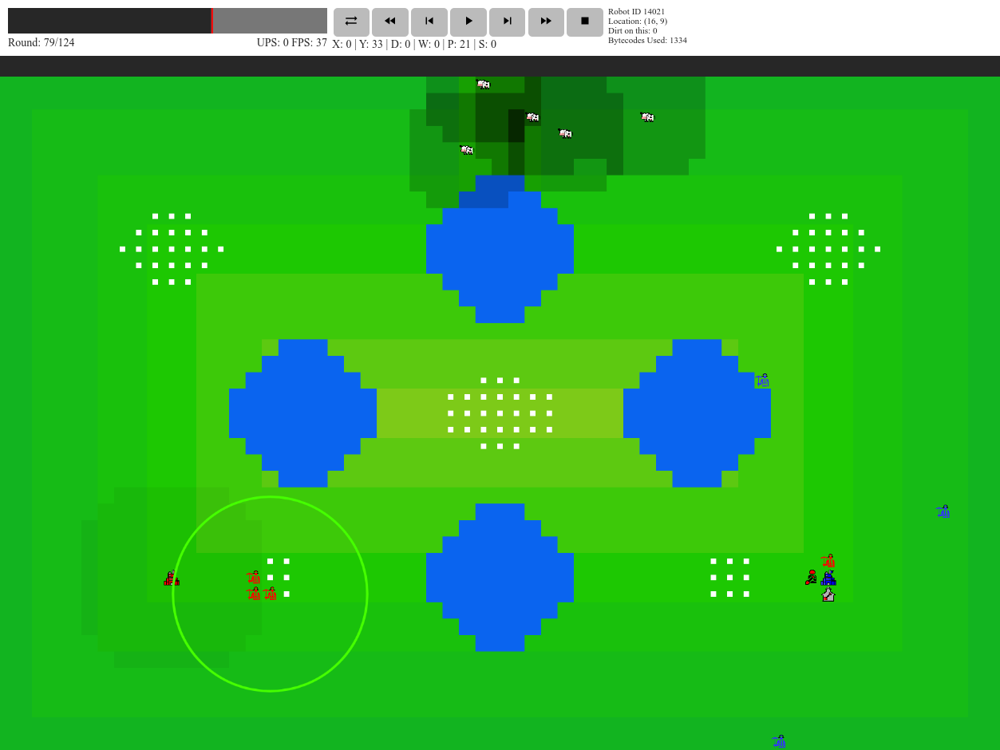

Team Battlegaode: Hizami Anuar, Karen Gao, Anthony Grebe, and Andrew Tockman
Winning the Game
In this year's competition, teams play against each other on a grid of size ranging from 32x32 to 64x64. Each team has an HQ, other buildings, and an army of units, and the game ends when one of the HQs is destroyed. This can happen in two ways:
An HQ is buried in dirt
An HQ is flooded
Burying Buildings in Dirt
Arguably the most important unit in the game is the landscaper, which can pick up dirt from any square adjacent to itself and then deposit that dirt on another adjacent square. Piling a sufficient amount of dirt on a building will crush it, so burying the enemy buildings (and removing dirt from your own buildings) is the primary method of attack. In particular, depositing 50 dirt on the enemy HQ (in excess of what they managed to remove) will automatically win the game.

The red team (our group's submission) burying the HQ of the blue team (the sample player released by teh devs). The landscapers are the units with shovels. The enemy HQ is already underneath 49 dirt; it will be buried next turn.
Flooding
Each tile on the board has a starting elevation, which is changed whenever landscapers add or remove dirt. Over the course of the game, the global water level rises, slowly at first, but exponentially faster as the game progresses. At the end of each round, the floodwaters spread from water tiles to any adjacent tile whose elevation is lower than the global water level. The HQ can be defended (although not indefinitely) by surrounding it with a high wall and hoping the opponent's HQ floods first.
The red team and blue team both constructing defensive walls to prepare for the rising flood. The red team's wall is higher since red has more landscapers dedicated to wall construction. Note that the map is almost completely flooded at this point.
Types of Robots
To help you on this mission of burying the enemy HQ and/or surviving the flood, your team is allowed to construct multiple types of robots with different abilities.
Robots are classified into two types: units and buildings. Units can move around the map (at a rate of 1 square per action; diagonal movements are allowed). Buildings can never be moved once they are built and are destroyed by being covered in a sufficient amount of dirt (which varies by building).
Landscapers
We have already seen this robot, which can move dirt around. Each turn, it can either pick up or deposit one unit of dirt. Landscapers can carry a maximum of 25 dirt, which can be useful when moving it around the map.
Miners
Miners are the worker units of the game. They are the only units that can construct buildings. They also, collect the resource of the game, soup, which must be spent in order to construct other robots.
The map is initially populated with multiple soup deposits, totaling tens of thousands of soup. A miner can collect up to 7 soup per action and can carry up to 100 total soup. Miners can also deposit their soup in a refinery, where it is processed and then added to the team's soup pool.

Red miners collecting soup from a soup deposit. The map started out vertically symmetric, so the soup deposit near the blue HQ is untouched, whereas the one near the red HQ is about halfway depleted.